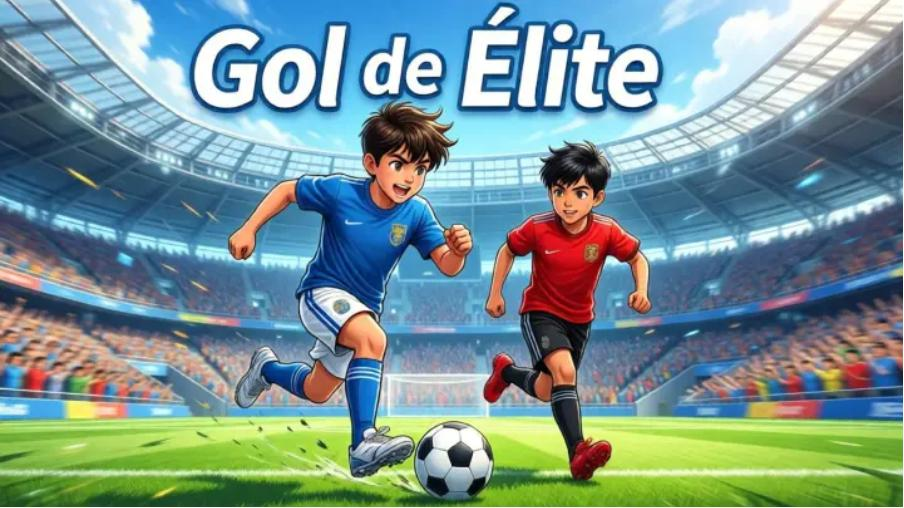
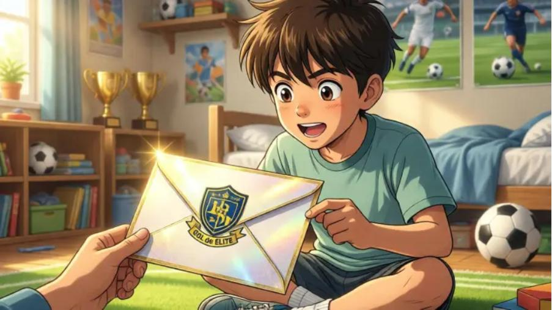
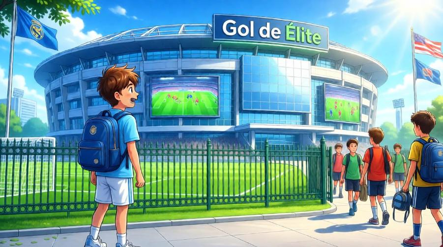
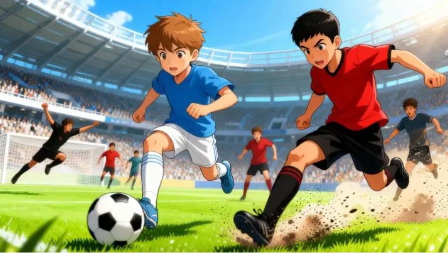
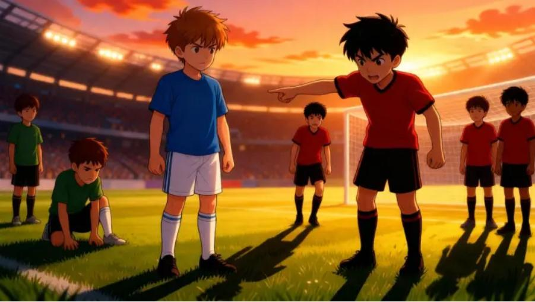
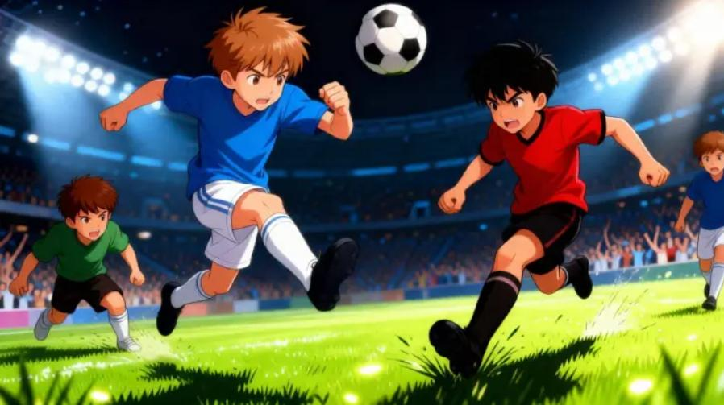
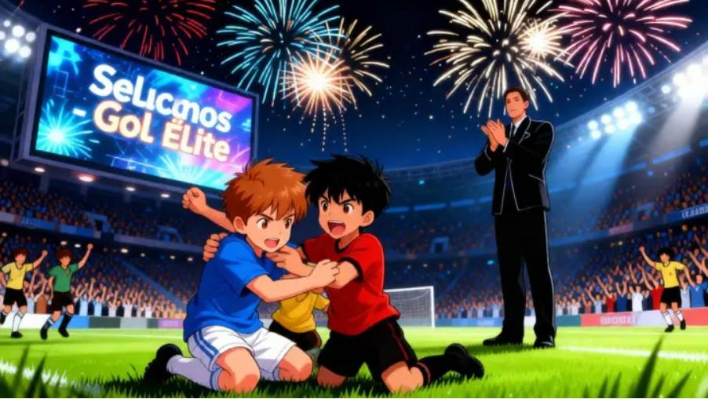
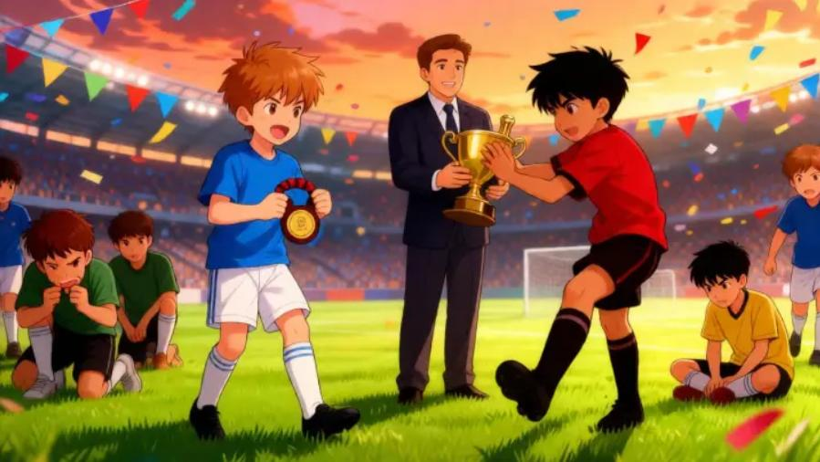

“Gol de Élite” – Leo y Tomás corren por el estadio mostrando su velocidad y energía. El torneo más importante de la Academia de Fútbol está a punto de comenzar.

Leo, un niño de 11 años con gran habilidad en el fútbol, recibe una carta brillante. ¡Ha sido invitado a la prestigiosa Academia de Fútbol “Gol de Élite”! Sus ojos brillan de emoción y anticipación.

Al llegar, Leo queda asombrado. La Academia es enorme: campos verdes, pantallas gigantes y jóvenes talentos entrenando. Se siente pequeño, pero lleno de motivación para demostrar su talento.

Desde su primer partido, Leo descubre que la velocidad no es suficiente. Frente a él está Tomás, un delantero preciso y competitivo. Cada pase y cada regate cuenta en el torneo.

El torneo se intensifica. Los equipos se reducen a cinco jugadores. Cada derrota significa que alguien queda eliminado. Leo y Tomás empiezan a aprender a colaborar para avanzar.

Solo tres jugadores llegan a la fase final. Leo, Tomás y su compañero deben usar velocidad, estrategia y resistencia. Cada movimiento puede decidir quién ganará el torneo.

Tras un partido emocionante, el Director anuncia a los ganadores. Leo, Tomás y su compañero formarán parte del equipo nacional masculino. El estadio celebra con fuegos artificiales.

En la ceremonia final todos los participantes celebran juntos. Leo sostiene su medalla mientras el director sonríe orgulloso. La verdadera victoria es mejorar y aprender de los demás.
Video corto mostrando la portada animada con efectos de entrada.
Video corto mostrando la llegada de Leo a la Academia con animación.